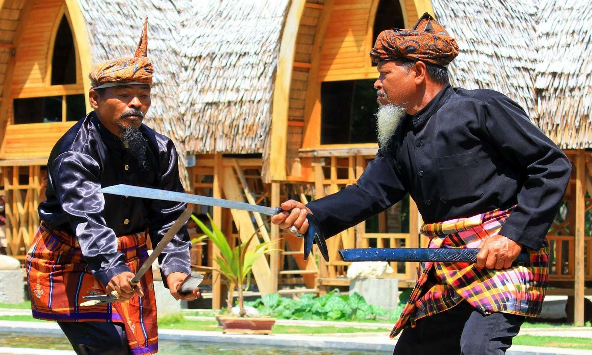
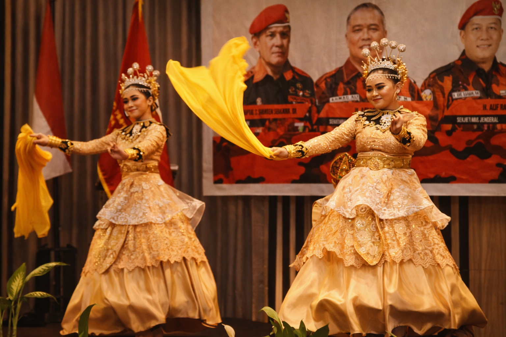
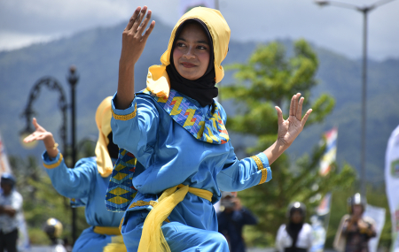

Temukan tradisi abadi, nilai-nilai sakral, dan warisan hidup dari permata tersembunyi Sulawesi.

Sebuah perjalanan melintasi waktu, dari kerajaan kuno hingga menjadi Serambi Madinah di Sulawesi.
Persekutuan "Limo lo Pohala'a" yang menyatukan lima kerajaan besar dalam harmoni.
Menjadi pelabuhan strategis yang mempertemukan budaya lokal dengan pengaruh global.
Filosofi "Adat Bersendikan Syara', Syara' Bersendikan Kitabullah" yang mendarah daging.
Saksi bisu pertahanan kerajaan Gorontalo yang berdiri megah di atas bukit menghadap Danau Limboto.
Simbol kemegahan arsitektur tradisional Gorontalo yang sarat akan makna filosofis musyawarah.
Seni menyulam kain unik yang membutuhkan ketelitian tinggi, diwariskan dari generasi ke generasi.
Tarian sakral penyambutan tamu dan tradisi pernikahan.
Prosesi penuh makna mulai dari kelahiran hingga pernikahan.
Irama bambu tradisional yang menggetarkan jiwa.
Identitas lisan yang terus dijaga dalam komunikasi harian.
Gunakan pakaian sopan dan tertutup saat berkunjung ke tempat ibadah atau acara adat.
Senyum dan sapa dengan ramah. Hormati tokoh adat dan orang tua dengan sopan.
Minta izin sebelum memotret orang atau prosesi upacara adat yang sakral.

